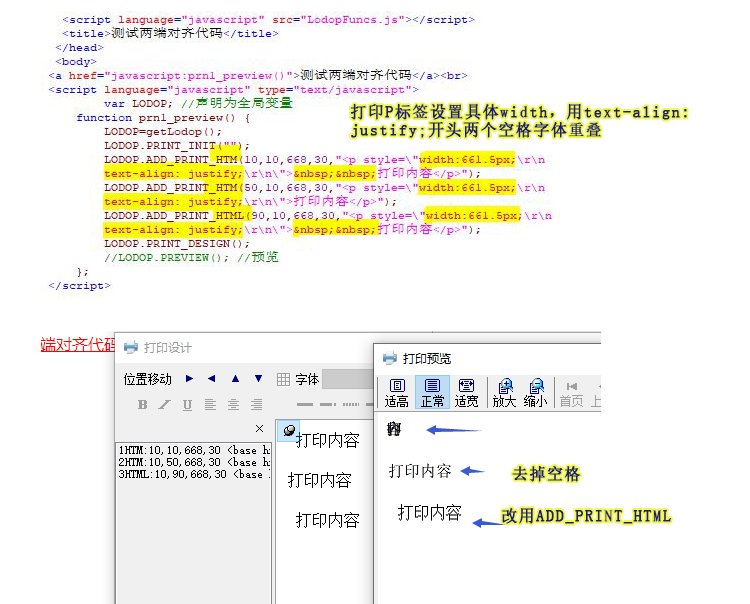

lodop打印P标签设置具体width，用text-align: justify;字体重叠
当两端对齐text-align: justify;加具体宽度，内嵌前面没有空格时，字体会重叠在一起。
<p style="width:661.5px; text-align: justify; "> 打印内容</p>
本文测试这个问题，由于lodop是调用本地底层引擎解析超文本，和解析超文本引擎有关，有些电脑可能会是正常的，有些会有这个问题。
测试：
第一个打印项P标签，设置了宽度，设置两端对齐，内容前两个是空格。（现象：字体重叠到一起了）
第二个打印项P标签，设置了宽度，设置两端对齐，内容前两个不是空格。（现象：没有重叠一起）
第三个打印项P标签，设置了宽度，设置两端对齐，内容前两个是空格，用的ADD_PRINT_HTML语句。（现象：没有重叠一起）
解决方法：
如果清晰度可以接受，换成ADD_PRINT_HTML（图形模式）语句试试。或去掉两端对齐，去掉空格，或改用其他样式和其他实现方式。
测试代码：
<script language="javascript" src="LodopFuncs.js"></script> <title>测试两端对齐代码</title> </head> <body> <a href="javascript:prn1_preview()">测试两端对齐代码</a><br> <script language="javascript" type="text/javascript"> var LODOP; //声明为全局变量 function prn1_preview() { LODOP=getLodop(); LODOP.PRINT_INIT(""); LODOP.ADD_PRINT_HTM(10,10,668,30,"<p style=\"width:661.5px;\r\n text-align: justify;\r\n\"> 打印内容</p>"); LODOP.ADD_PRINT_HTM(50,10,668,30,"<p style=\"width:661.5px;\r\n text-align: justify;\r\n\">打印内容</p>"); LODOP.ADD_PRINT_HTML(90,10,668,30,"<p style=\"width:661.5px;\r\n text-align: justify;\r\n\"> 打印内容</p>"); LODOP.PRINT_DESIGN(); //LODOP.PREVIEW(); //预览 }; </script>
